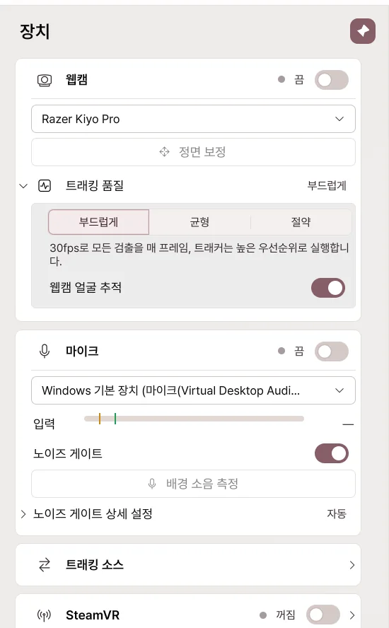
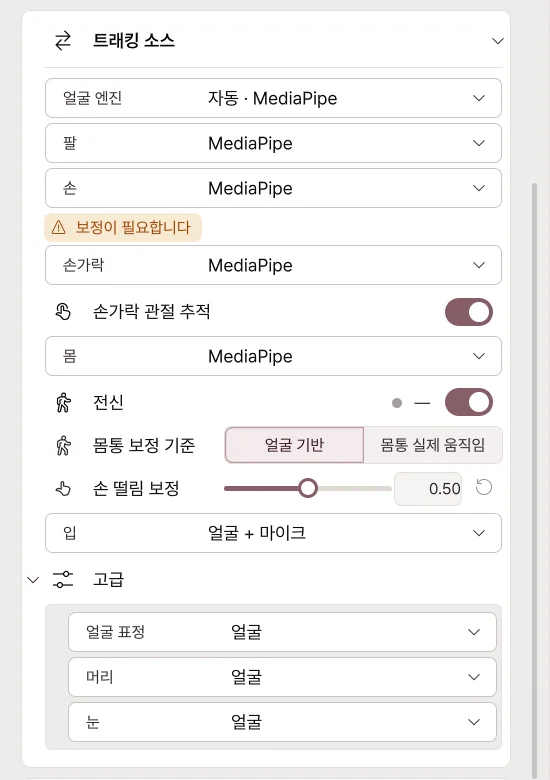
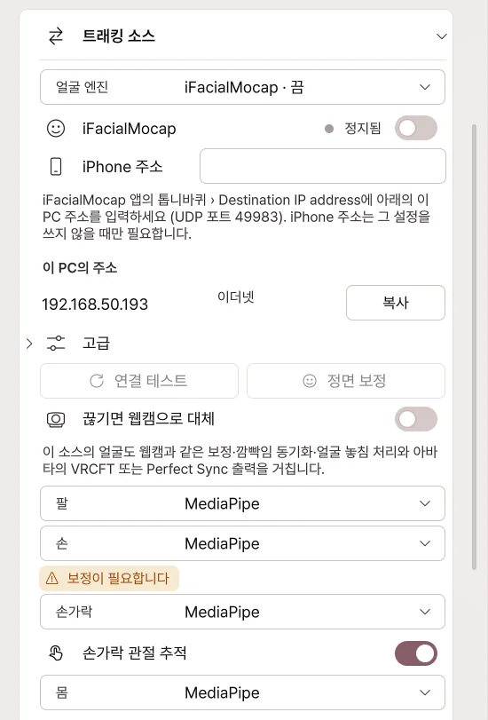
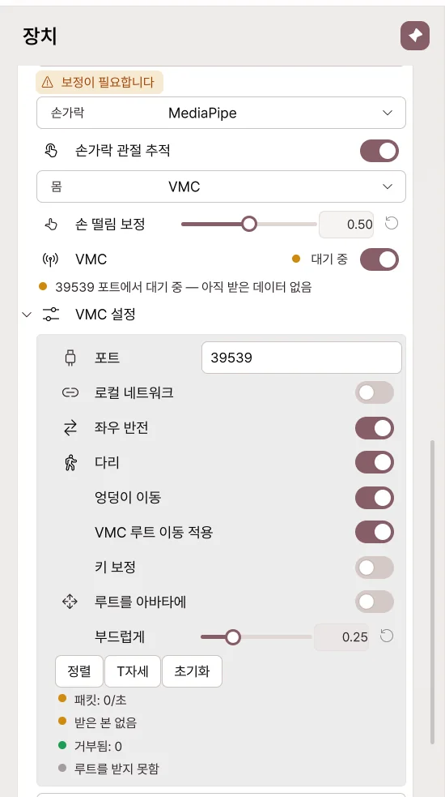
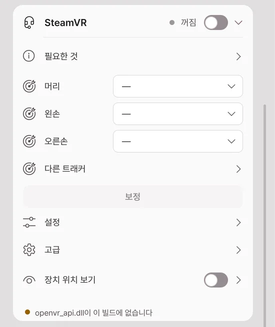

장치
웹캠·마이크·트래커를 연결하고 얼굴·몸·손에 사용할 입력을 고릅니다.
웹캠과 마이크

| 버튼·항목 | 작동 방식 |
|---|---|
| 웹캠 스위치 | 선택한 카메라로 추적을 시작하거나 멈춥니다. |
| 카메라 목록 | 사용할 웹캠을 고릅니다. |
| 정면 보정 | 지금 바라보는 방향을 아바타의 정면으로 맞춥니다. |
| 트래킹 품질 | 부드럽게는 움직임을 자주 계산합니다. 균형·절약은 PC 부담을 줄입니다. |
| 마이크 스위치 | 선택한 마이크로 입 움직임을 시작하거나 멈춥니다. |
| 입력 막대 | 목소리가 들어오는 크기를 보여 줍니다. 말할 때 움직이는지 확인하세요. |
| 노이즈 게이트 | 작은 소리에는 입이 열리지 않게 합니다. |
| 배경 소음 측정 | 말하지 않는 동안의 소리를 측정해 잡음 기준을 맞춥니다. |
노이즈 게이트 기준을 높이면 키보드 소리에 덜 반응하지만 작은 목소리도 무시할 수 있습니다. 입이 잘 안 움직이면 기준을 낮춰 보세요.
트래킹 소스

얼굴·입·머리·눈·팔·손·손가락·몸을 각각 무엇으로 움직일지 고릅니다.
| 선택 | 사용할 때 |
|---|---|
| 웹캠 | 카메라에 보이는 내 얼굴·몸·손을 따라 움직입니다. |
| iPhone | iPhone 얼굴 앱으로 표정과 머리를 움직입니다. |
| VMC | 다른 모션 캡처 앱이나 트래커 앱의 동작을 받습니다. |
| Ultraleap | 전용 손 트래커로 손을 움직입니다. |
| SteamVR | HMD·컨트롤러·트래커를 신체 부위에 연결합니다. |
| 끔 | 그 부위에 해당 추적 입력을 사용하지 않습니다. |
예: 얼굴은 iPhone, 팔과 손은 웹캠으로 둘 수 있습니다. 장치가 연결되어 있어도 부위의 소스가 다른 입력을 가리키면 움직이지 않습니다.
웹캠 전신과 손가락
- 전신: 카메라에 보이는 몸통과 다리를 추적합니다. 책상에 가려진 다리는 실제로 보이는 것처럼 추적되지 않습니다.
- 손가락 관절 추적: 손가락 마디의 굽힘과 벌림을 따라갑니다.
- 손 떨림 보정: 높이면 미세한 떨림이 줄고, 빠른 동작은 조금 늦게 따라옵니다.
iPhone 연결

- iPhone과 PC를 같은 Wi-Fi에 연결합니다.
- 얼굴 엔진에서 iFacialMocap 또는 FaceMotion3D를 고릅니다.
- 이 PC의 주소를 복사해 휴대폰 앱의 송신 대상 주소에 넣습니다.
- 입력 스위치를 켜고 정면을 잠깐 바라봅니다. 첫 얼굴 입력 뒤 약 3초 후 시작 보정이 진행됩니다.
- 연결 테스트에서 데이터가 들어오는지 확인합니다.
| 항목 | 켜거나 바꾸면 |
|---|---|
| 미러 | 좌우 움직임을 거울처럼 반영합니다. |
| 끊기면 웹캠으로 대체 | 휴대폰 연결이 끊긴 동안 웹캠으로 전환합니다. |
| iPhone 주소 | 휴대폰 앱에 PC 주소를 넣지 않는 방식에서 사용합니다. 일반 연결에서는 비워 둘 수 있습니다. |
VMC 연결

- 보내는 앱에서 VMC 송신을 켜고 이 PC의 수신 주소·포트로 보냅니다.
- 트래킹 소스에서 받을 부위를 VMC로 고릅니다.
- VMC 설정에 받은 본 개수와 입력 상태가 나타나는지 확인합니다.
- 몸 방향이나 팔이 어긋나면 T자세 또는 정렬로 맞춥니다.
VMC 추적 테스트 완료 장치: ReboCap, HTC VIVE Tracker, Tundra Tracker.
SteamVR 연결

- SteamVR에서 HMD·컨트롤러·트래커가 인식되는지 확인합니다.
- 장치 → SteamVR을 켭니다.
- 장치를 머리·손·몸 등 해당 부위에 연결합니다.
- 보정을 실행해 아바타와 내 장치 위치를 맞춥니다.
장치 연결은 정상인데 움직임이 이상하다면 동작에서 부드러움·보정·추적 복귀 설정을 확인하세요.